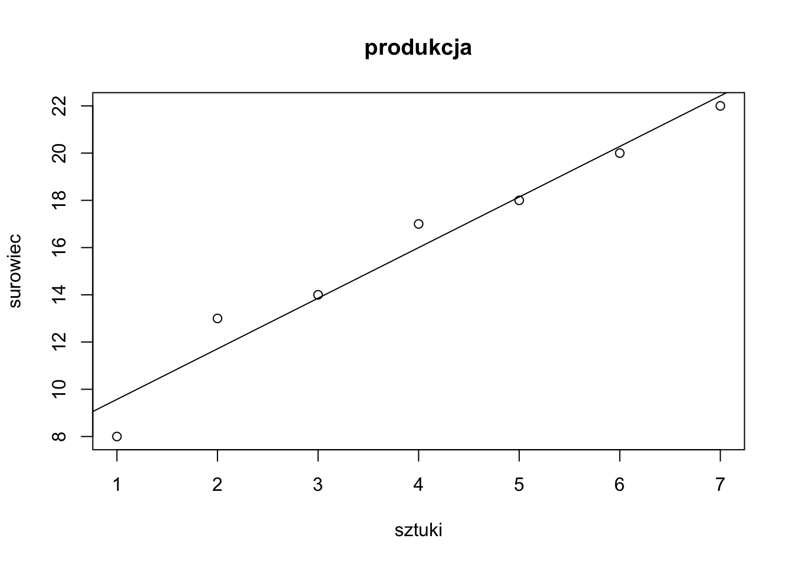
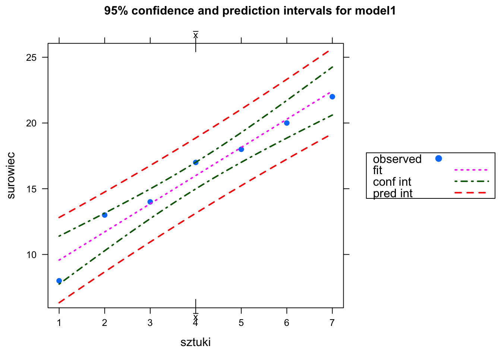

Rozdział 7 Regresja liniowa i wielokrotna
7.1 Regresja liniowa
Mamy dane dwie zmienne (cechy) x i y. Chcemy określić zależność liniową pomiędzy tymi zmiennymi, tzn. wyznaczyć liniowy wpływ zmiennej x na zmienną y. W tym celu wyznaczymy linię prostą zwaną regresją liniową postaci
\(y = ax+b\)
gdzie
\(y\) - zmienna zależna, objaśniana (the response variable)
\(x\) - zmienna niezależna, objaśniająca (the predyctor variable)
\(a\) - współczynnik regresji
\(b\) - wyraz wolny (intercept).
Miarą dopasowania regresji liniowej do danych jest współczynnik determinacji \(R^2\).
W R wyznaczenie regresji liniowej można wykonać za pomocą funkcji postaci \(lm(y~x)\) lub \(lm(y~x, dane)\).
Przykład (Greń 1975, s. 176) Badając zależność między wielkością produkcji X pewnego wyrobu a zużyciem Y pewnego surowca zużywanego w produkcji tego wyrobu otrzymano dla losowej próby 7 obserwacji następujące wyniki (\(x_i\) w tys. sztuk, \(y_i\) w tonach):
Wyznaczyć równanie regresji liniowej.
Kod w R
Realizacja w R:
Decyzje: Ponieważ \(p\)-wartości dla wyrazu wolnego a (Intercept) oraz dla współczynnika kierunkowego b są mniejsze od 0,05 więc odrzucamy hipotezy zerowe i przyjmujemy hipotezy alternatywne.
Interpretacja: Wyraz wolny \(a\) (Intercept) oraz współczynnik kierunkowy b są istotne dla równania regresji liniowej \(y =a+bx\).

> abline(model1)> # rysunek danych, równania regresji liniowej oraz przedziały ufności
> ci.plot(model1)
Równanie regresji liniowej jest postaci:
7.2 Regresja wielokrotna
Mamy dane cechy \(x_1, x_2, ..., x_n\) i \(y\). Chcemy określić zależność liniową pomiędzy zmienną y a zmiennymi \(x_1, x_2, ..., x_n\), tzn. wyznaczyć liniowy wpływ zmiennych \(x_1, x_2, ..., x_n\) na zmienną \(y\). W tym celu wyznaczymy regresją wielokrotną postaci $y = b_0 + b_1x_1 + b_2x_2 + b_3x_3 + … + b_nx_n $ gdzie \(y\) - zmienna zależna, objaśniana (the response variable),
\(x_1, x_2, ..., x_n\) - zmienne niezależne, objaśniające (the predyctor variables),
\(b_0\) - wyraz wolny (intercept),
\(b_1, ..., b_n\) - współczynniki regresji.
Miarą dopasowania regresji wielokrotnej do danych jest współczynnik determinacji \(R^2\).
W R wyznaczenie regresji wielokrotnej, tak jak regresji liniowej, można wykonać za pomocą funkcji postaci \(lm(y~x_1+x_2+...+x_n)\) lub $lm(y~x_1+x_2+…+x_n, dane) $
Przykład (Elandt 1964, s. 441)
Badano cztery cechy słomy konopi: ciężar włókna (g), długość łodygi (cm), grubość ło-dygi (mm) oraz ciężar łodygi (g). Znaleźć równanie regresji wielokrotnej liniowej określają-cej zależność ciężaru włókna od długości, grubości oraz ciężaru łodygi.
Kod w R
# Elandt 1964, s.441 - regresja liniowa wielokrotna
rm(list=ls()) # usuwanie wszystkich zmiennych z przestrzeni roboczej
setwd("D://abc") # ustanowienie aktualnego folderu
# tworzenie danych
sloma=read.table("Elandt-441-regresja-wielokrotna.txt", header=T)
sloma
head(sloma)
# korelacje cząstkowe
round(cor(sloma),2)
# regresja liniowa wielokrotna
regresja<-lm(ciezwlokna~dluglodygi+grublodygi+ciezlodygi, data=sloma)
summary(regresja)
# ANOVA dla regresji
anova(regresja)Realizacja w R:
> # Elandt 1964, s.441 - regresja liniowa wielokrotna
> rm(list=ls()) # usuwanie wszystkich zmiennych z przestrzeni roboczej
> setwd("D://abc") # ustanowienie aktualnego folderu
> # tworzenie danych
> sloma=read.table("Elandt-441-regresja-wielokrotna.txt", header=T)
> sloma
> head(sloma)
> # korelacje cząstkowe
> round(cor(sloma),2)
> # regresja liniowa wielokrotna
> regresja<-lm(ciezwlokna~dluglodygi+grublodygi+ciezlodygi, data=sloma)
> summary(regresja)
> # ANOVA dla regresji
> anova(regresja)AAAAA